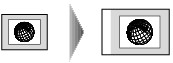
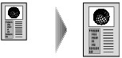
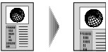

You can specify the magnification optionally or select the preset-ratio copying or fit-to-page copying.
The LCD below is displayed when you press the right Function button in the Copy standby screen. Select the reduction/enlargement method from Magnif..
 Note
Note-
Some of the reduction/enlargement methods are not available depending on the copy menu.
-
Fit to page
The machine automatically reduces or enlarges the image to fit the page size.
The setting in Magnif.: Fit to page
Note-
When Fit to page is selected, load the original on the Platen Glass.
-
When you select Fit to page, the page size may not be detected correctly depending on the original. In this case, select the setting other than Fit to page.
-
-
Preset ratio
You can select one of the preset ratios to reduce or enlarge copies.
Select the appropriate ratio for size of original and page size.
The setting in Magnif.: 70% A4->A5/86% A4->B5/94% A4->Letter/115% B5->A4/141% A5->A4/156% 5x7->Letter/183% 4x6->Letter
Note-
Some of the preset ratios are not available depending on the country or region of purchase.
-
-
Ratio specified copy
You can specify the copy ratio as a percentage to reduce or enlarge copies.
If you select other than Fit to page and press the right Function button, Magnification screen is displayed. Use the

 button to specify the magnification.
button to specify the magnification.
Note-
400% MAX (maximum copy ratio) and 25% MIN (minimum copy ratio) are selectable.
-
If you make a copy at the same size as the original, select Same size.